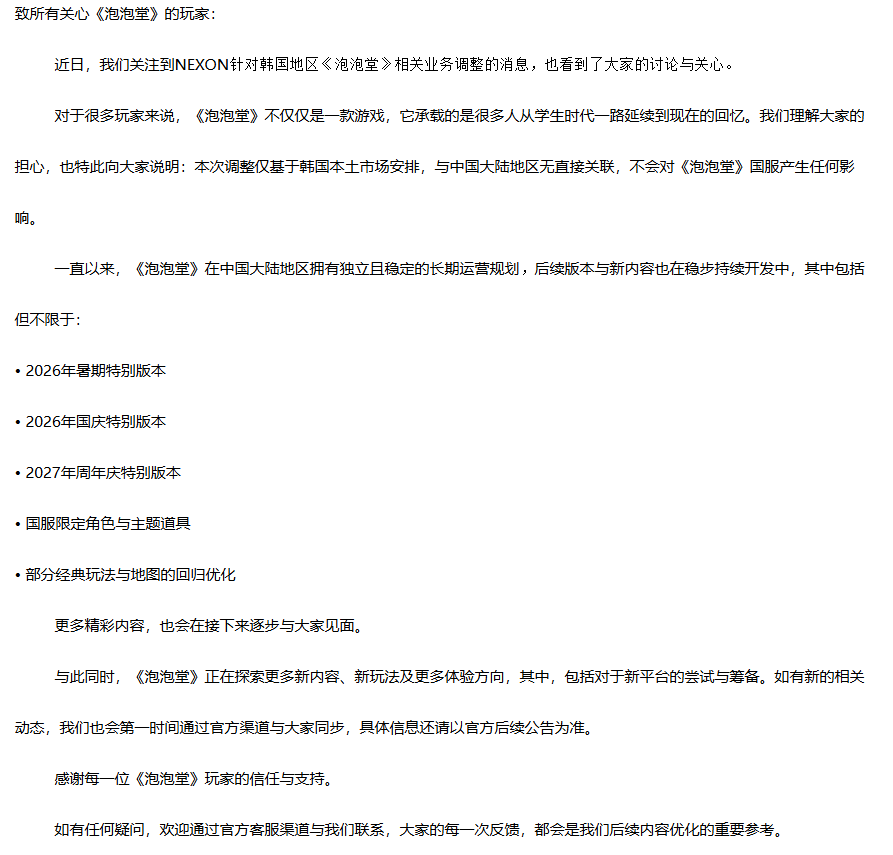

据传，韩国Nexon公司旗下经典休闲竞技网游《泡泡堂》（Crazy Arcade，又称爆爆王）今日正式发布停服公告，宣布韩服与台服将于2026年8月13日正式停止运营。
《泡泡堂》于2001年10月16日在韩国正式开服，是Nexon早期代表作之一，以简单易上手的“炸弹人”式玩法、Q版可爱画风和极强的社交属性迅速风靡亚洲。2003年4月12日由盛大网络代理进入中国大陆，很快成为一代人的童年记忆，最高同时在线人数曾突破70万，创下当时休闲游戏的纪录。
作为一款运营近25年的长寿游戏，《泡泡堂》陪伴无数玩家度过了学生时代，踢足球、抢包子、打Boss等经典模式至今仍被许多老玩家津津乐道。然而随着玩家老龄化、游戏类型迭代以及运营成本上升，这款昔日国民级休闲游戏最终还是走到了生命周期的终点。
Nexon在公告中表示：“感谢所有玩家多年来对《泡泡堂》的支持与陪伴，我们将为玩家提供角色数据备份、纪念服体验等相关后续安排，具体细则将在后续公布。”
而中国大陆服目前由上海数龙科技有限公司代理运营，暂未宣布停服，仍处于正常维护和活动更新阶段。但业内人士指出，随着韩服停运，大陆服的未来也存在较大不确定性
《泡泡堂》于2001年10月16日在韩国正式开服，是Nexon早期代表作之一，以简单易上手的“炸弹人”式玩法、Q版可爱画风和极强的社交属性迅速风靡亚洲。2003年4月12日由盛大网络代理进入中国大陆，很快成为一代人的童年记忆，最高同时在线人数曾突破70万，创下当时休闲游戏的纪录。
作为一款运营近25年的长寿游戏，《泡泡堂》陪伴无数玩家度过了学生时代，踢足球、抢包子、打Boss等经典模式至今仍被许多老玩家津津乐道。然而随着玩家老龄化、游戏类型迭代以及运营成本上升，这款昔日国民级休闲游戏最终还是走到了生命周期的终点。
Nexon在公告中表示：“感谢所有玩家多年来对《泡泡堂》的支持与陪伴，我们将为玩家提供角色数据备份、纪念服体验等相关后续安排，具体细则将在后续公布。”
而中国大陆服目前由上海数龙科技有限公司代理运营，暂未宣布停服，仍处于正常维护和活动更新阶段。但业内人士指出，随着韩服停运，大陆服的未来也存在较大不确定性
